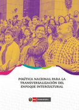
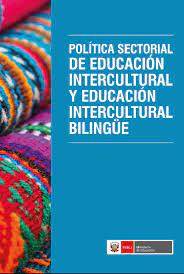
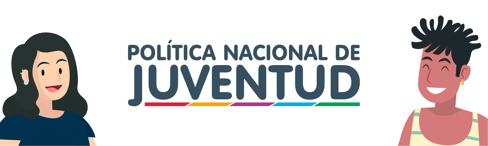
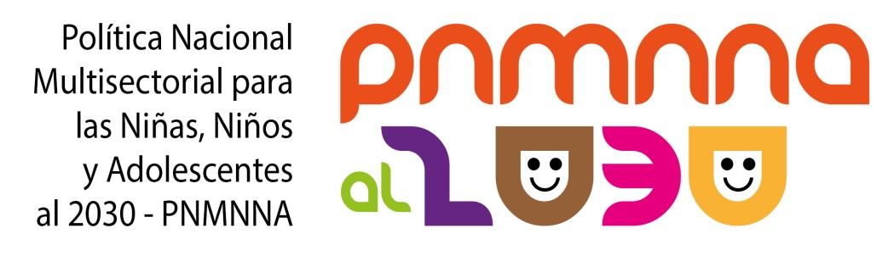
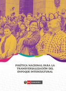
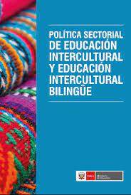
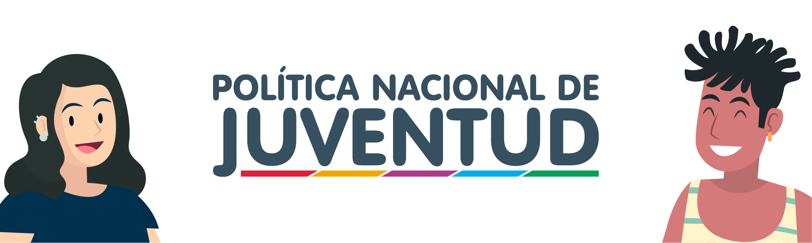
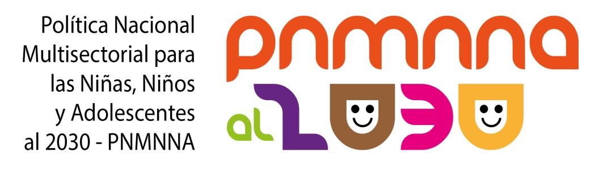

8 de cada 10 peruanos/as cree que la discriminación ocurre todo el tiempo y nadie hace nada (MINJUSDH).
La escuela es el 5° espacio donde se producen mayor cantidad de casos de discriminación étnico-racial en el Perú (MINCUL).
SíseVe cuenta con aproximadamente 61381 casos de violencia escolar y bullying reportados a nivel nacional (MINEDU).
Desde 2016, somos un proyecto que empodera a las y los estudiantes de secundaria de las instituciones educativas de Junín como agentes interculturales que empleen el arte y la cultura para evidenciar, sensibilizar y hacerle frente a la discriminación, el bullying y la violencia escolar con base étnico-racial.
Nuestra iniciativa responde a un modelo comunitario y articulador de Educación Ciudadana Intercultural Artística, propuesto por Semilla Intercultural y que pone en medio a la escuela, posibilitando:
El ARTE y la CULTURA son nuestro recurso transformador, permitan evidenciar, sensibilizar y movilizar a las y los adolescentes contra la toda forma de discriminación y desigualdad, a través de:
a) Formación sensibilizante (teórico-práctica)
b) Reflexión ciudadana (introspectiva-artística)
c) Acción comunitaria (participativa)
Pero sabemos que no estamos solos en la lucha, en el Perú existen una serie de políticas, proyectos y programas que atienden a la diversidad y nosotros estamos alineados a ellos:
 






